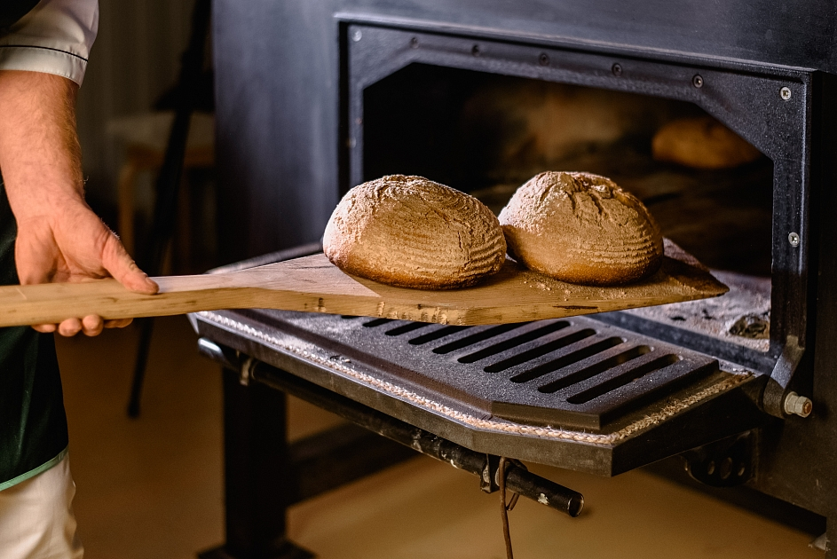
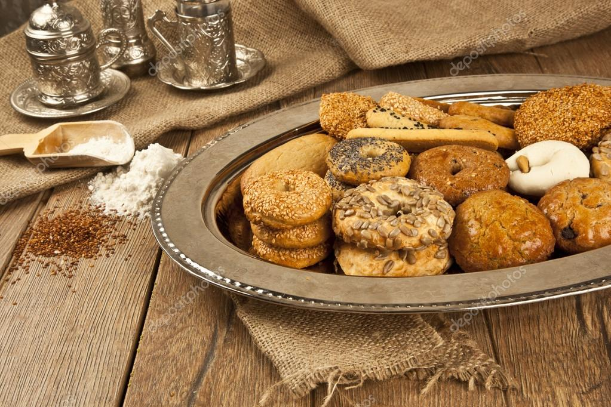
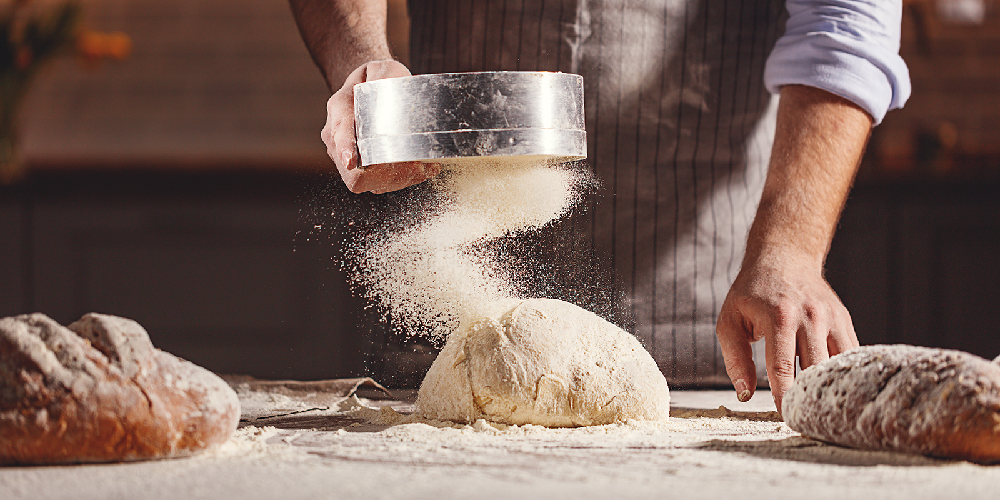

Основна дейност
Основната дейност на пекарна „Златна Коричка“ включва ежедневно печене на хляб и закуски, приготвяне на сладкарски изделия, кетъринг услуги и специални поръчки за лични и фирмени събития.
Общ преглед на дейността
Дейността на пекарната е организирана в няколко основни направления: ежедневно производство, кетъринг и специални проекти за клиенти.
Ежедневно печене
- Пресен хляб през целия ден (бял, пълнозърнест, със семена);
- Сутрешни закуски – банички, кифли, кроасани;
- Сезонни продукти – козунаци, коледни сладки, великденски хлебчета.
Кетъринг и фирмени поръчки
- Асортименти от мини сладки и соленки за събития;
- Кафе-паузи за фирмени срещи и обучения;
- Пакети за офиси – закуски и десерти за екипи.
Специални поръчки
- Торти по индивидуален дизайн за рождени дни и сватби;
- Персонализирани надписи и фигури от фондан;
- Безглутенови и веган предложения по заявка.
Дейност по тип клиенти
Услугите и продуктите се планират според различните групи клиенти – домашни, фирмени и образователни организации.
Домашни клиенти
Основни посетители на пекарната през деня. За тях са насочени:
- Ежедневни хлябове и закуски за вкъщи;
- Празнични торти за семейни поводи;
- Малки десерти „за кафе“ – мъфини, бисквити, тарталети.
Фирмени клиенти
Организации, които поръчват за своите екипи и гости:
- Кетъринг за фирмени събития и презентации;
- Кафе-паузи с солени и сладки хапки;
- Персонализирани кутии „офис закуска“.
Образователни партньори
Училища, детски центрове и обучителни организации:
- Закуски за ученици и деца;
- Работилници „Хляб у дома“ за ученици и родители;
- Участие в тематични проекти и кампании за здравословно хранене.
Преглед на предлаганите услуги и продукти
| Категория | Примерен продукт/услуга | Подходящо за |
|---|---|---|
| Ежедневно печене | Домашен хляб, кроасани, банички | Семейства, индивидуални клиенти |
| Кетъринг | Асорти мини сладки и соленки, кафе-пауза | Фирми, конференции, обучения |
| Специални поръчки | Сватбена торта, юбилейна торта, тематични десерти | Лични празници, сватби, рождени дни |


